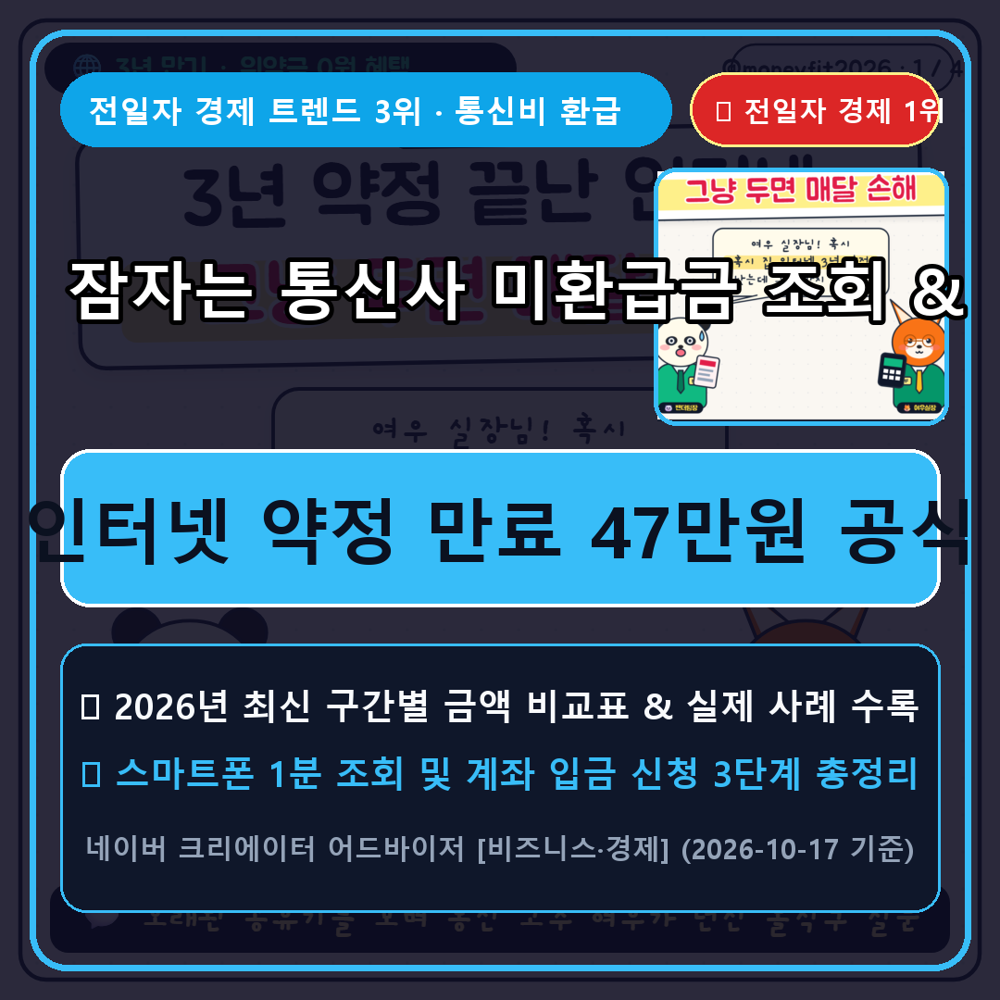

2_homefeed_thumbnails/2026-10-18_slot3_ca-econ-telecom-unclaimed-penalty-bep_thumb.png (스마트에디터 최상단 대표사진 지정 필수)3_clip_webtoon_crank_safe/2026-10-18_clip3_ca-econ-telecom-unclaimed-penalty-bep.mp4
▲ 잠자는 통신사 미환급금 조회 & 인터넷 약정 만료 47만원 공식 핵심 요약
예전에 휴대폰 번호이동을 했거나 이사하면서 인터넷을 해지할 때, 정산 과정에서 더 냈던 요금이나 보증금이 통신사 계좌에 그대로 남아 있는 경우가 생각보다 많습니다.
실제로 과학기술정보통신부와 한국통신사업자연합회가 운영하는 공식 사이트에서 조회해 보면 몇천 원에서 몇만 원씩 잠자고 있는 **'통신사 미환급액'**이 바로 뜨는데요.
여기에 더해 집 인터넷 3년 약정이 끝났는데도 그대로 쓰고 계신 분들이 놓치고 있는 **'최대 47만 원 지원금 손익분기점 공식'**까지 어제 크리에이터 어드바이저 인기 키워드 기준으로 한 번에 정리해 드립니다.
과거 유·무선 통신 서비스를 해지할 때 선납 요금이나 단말기 할부보증보험료, 장비 보증금 등이 정산되지 않고 남은 돈을 **'통신사 미환급액'**이라고 합니다.
포털에서 **'스마트초이스(www.smartchoice.or.kr)'**를 검색해 접속한 뒤 **[환급/혜택 ➔ 통신 미환급액 조회]** 메뉴에서 이름과 주민등록번호만 입력하면(회원가입 불필요, 평일·토요일 09시~20시), 4대 통신사에 잠자고 있는 내 미환급금을 30초 만에 일괄 조회하고 내 계좌로 환급 신청할 수 있습니다.
미환급금 조회와 함께 반드시 점검해야 할 가장 큰 고정비가 바로 가정용 인터넷·IPTV 약정입니다. 잔여 약정 상태별 유불리를 표로 정리했습니다.
| 현재 우리 집 약정 상태 | 해지 시 예상 위약금 | 신규 이동 시 사은품 수준 | 3년 월요금 인하 효과 | 최종 판단 (3년 합산 순이득) |
|---|---|---|---|---|
| 3년 약정 만료 (자동연장 중) | 0원 (언제든 해지 무료) | 약 45만 ~ 47만 원 현금/혜택 | 약 324,000원 (월 9천원 절감) | +794,000원 이득 (즉시 점검 필수) |
| 약정 만료 3~6개월 전 | 약 8만 ~ 15만 원 내외 | 약 45만 ~ 47만 원 현금/혜택 | 약 198,000원 (월 5.5천원 절감) | +518,000원 이득 (위약금 내고도 흑자) |
| 약정 1년 이상 남은 상태 | 25만 ~ 35만 원 이상 | 위약금 차감 시 실익 적음 | 휴대폰 결합할인 축소 주의 | 만료 시점까지 기존 회선 유지 권장 |
**첫째,** 1~2인 가구나 원룸·오피스텔에서 유튜브 시청과 웹서핑 위주로 사용한다면 **100메가(월 2만 원대 초반)** 요금제로도 속도 차이를 전혀 느끼지 못합니다.
**둘째,** 3~4인 가족이 고화질 OTT와 게임을 동시에 즐긴다면 **500메가**가 가장 가성비가 높으며, 대용량 영상 업로드 작업을 매일 하는 경우가 아니라면 굳이 비싼 1기가 요금제를 유지할 필요가 없습니다.
**셋째,** 통신사 고객센터에 전화해 현재 회선의 정확한 '약정 만료일'과 '재약정 시 방어 혜택'을 먼저 물어본 뒤 타사 이동 혜택과 비교하면 절대 손해 보지 않습니다.
**Q1. 휴대폰은 알뜰폰을 쓰는데 집 인터넷과 결합이 가능한가요?**
네, 통신 3사 망을 사용하는 주요 알뜰폰 요금제는 자사 인터넷(SKB·KT·LGU+)과 유무선 결합이 가능하여 매월 인터넷 요금 또는 휴대폰 요금에서 추가 할인을 받을 수 있습니다.
💬 오늘 정리해 드린 『인터넷 약정 만료 47만원 공식』, 지금 바로 1분만 투자해 확인해 보세요!
더 보기 편한 8초 웹툰 모션 요약 영상(네이버 클립)과 질의응답·체크리스트 게시판(네이버 공식 카페)에서도 매주 새로운 생활경제·환급금 정보를 가장 빠르게 받아보실 수 있습니다.
❤️ 이 글이 도움 되셨다면 [공감]과 [이웃 추가] 꾹 눌러두시고 가족·지인분들께도 공유해 주세요!